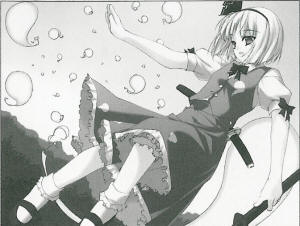
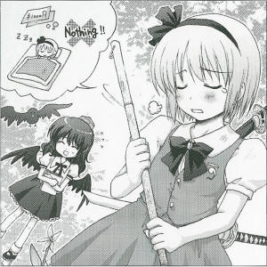

|
5th of the Leaf Month (August), Season 119
>Ghost Procession on a Midsummer Afternoon Surprised from seeing ghosts flying midday with no hesitationAt about 1:00 PM on X/X, a strange incident occurred in which a huge number of ghosts flew over Gensokyo. The witnesses were all surprised, as they'd never seen such a huge number of ghosts before the sun had even set. Hearing the news, I chased them with my fastest feet in all of Gensokyo. The ghosts numbering beyond my imagination formed a line, all heading in the same direction. It was so cold inside the swarm of ghosts, and I couldn't help but feel how strange the gap between this and the summer heat was. The one who led the group was Youmu Konpaku (Half-human Half-phantom), who works as a gardener in the Netherworld. I directly asked her in flight why she led the huge number of ghosts, and where they headed. I just came here to take everybody back to the Netherworld. Since the boundary between this world and the Netherworld is thin at the moment, a small trigger is enough to let them cross over to this world. Yesterday, the people here made an ancestor-greeting fire all over Gensokyo; because of that, some ghosts got confused by the greeting and came into this world. A lot of ghosts took advantage of the situation to come to Gensokyo and play around. That's why I'm taking them back home. As she said, it was the first day of Bon Festival yesterday, so they seem to have made an ancestor-greeting fire. It's ironic that the thoughtless fire called not only their ancestors but also free ghosts. Also, the gardener gave the following warning about ghosts. Even if you see any ghosts, don't feed or make them pets. Once ghosts get along with you, they won't part from you easily. And what's worse, you may be possessed for the next three generations. Plus, ghosts are extremely cold, so you risk getting frostbite if you touch them. If you find any ghosts, please just ignore them or call Hakugyokurou or a shrine maiden. Though I felt no feeling of danger or foul play in this incident, it's better not to provoke or eat any ghosts if they're found floating in the air.
(Aya Shameimaru)
|
|
 Aya Though one year has passed since then, the number of ghosts doesn’t seem to have decreased at all. Youmu I’m still doing my best. I’m supposed to be doing my best! Aya But this is the result. Youmu (Weeping) Aya I've already gotten used to ghosts. It's now an ordinary scene for ghosts to be flying over Gensokyo. Youmu Are you trying to be sarcastic? Aya Not at all. Maybe we're being more familiar with Netherworld, maybe you're side by side with death; perhaps it's just like being at the risk of life? Youmu I don't know what you're trying to say, but it's definitely become easier to take a trip between this world and the Netherworld. These days, living humans and youkai come to the Netherworld without even thinking about it; dead people come to this world, too. Aya Is this situation okay? Youmu It's not okay, I guess. Aya You don't sound convinced. Youmu The dead belong to the Netherworld; the living belong to this world. Though the natural order of things is ideal, the world can still get by if it changes just a little. The dead aren't about to come back to life, and the living won't unexpectedly drop dead. So, I'm not sure why I have to keep the ghosts in the Netherworld and keep the living out. Aya If you're confused, the situation will never return to normal, I guess. Youmu Plus, the boundary between the Netherworld and the world doesn't look like it’ll be repaired. I can't do anything by myself... Aya By the way, you're also a living human, aren't you? Why do you work in the Netherworld? Youmu Me? I've never thought of that. But I'm a dead human, too, so... hmm. Aya Don't think on it too hard, or I'll get worried. I just asked so that I might get an answer like I get a high salary or I have a lot of vacation time. Youmu I've never gotten any salary... and what's vacation time? Aya Ah, what a pity. Youmu Oh , I don't need any sympathy... I get a snack at 3 o'clock, and I've gotten sick leave before, I guess... Aya Truly a pity... Youmu Anyways, I've served the Saigyouji clan since I was born, so it's natural for me. Aya I'm starting to wonder if the natural thing to do is always right. Youmu The natural order of things is ideal. They say it differs from person to person, but I’m not talking about that kind of surface-level common sense. The dead belong to the Netherworld and the living belong to this world; the youkai eat humans and the humans defeat youkai. I've been taught that the natural order of the world is everyone's ultimate truth. Aya And one of your 'natural' things is to have no salary and no vacation time? Youmu (Weeping) Profile: Youmu Konpaku A half-phantom and half-human. An earnest two-katana-styled swordperson tripling as the gardener of Saigyouji clan and the guardian of her mistress. Appearances: Perfect Cherry Blossom, Immaterial and Missing Power, Imperishable Night, Phantasmagoria of Flower View |